01
世界背景
整体是古早原始纪元，无高度文明，环境恶劣且充满未知危险（巨鸟、毒蛇、有毒菌菇等）， 万物遵循最原始的食物链规则，野性且纯粹。
古早原始纪元，无高度文明。巨兽遗骸塑造了独特而危险的世界， 三大族群在原始食物链的博弈中「活下去」，并学会与万物共生。
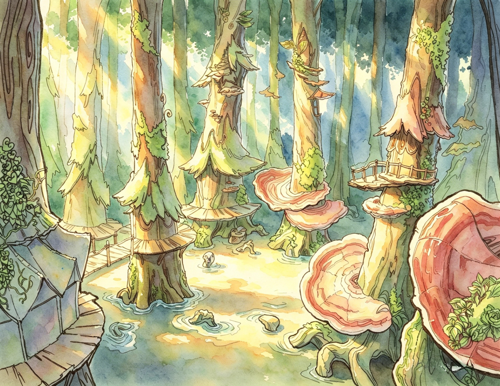
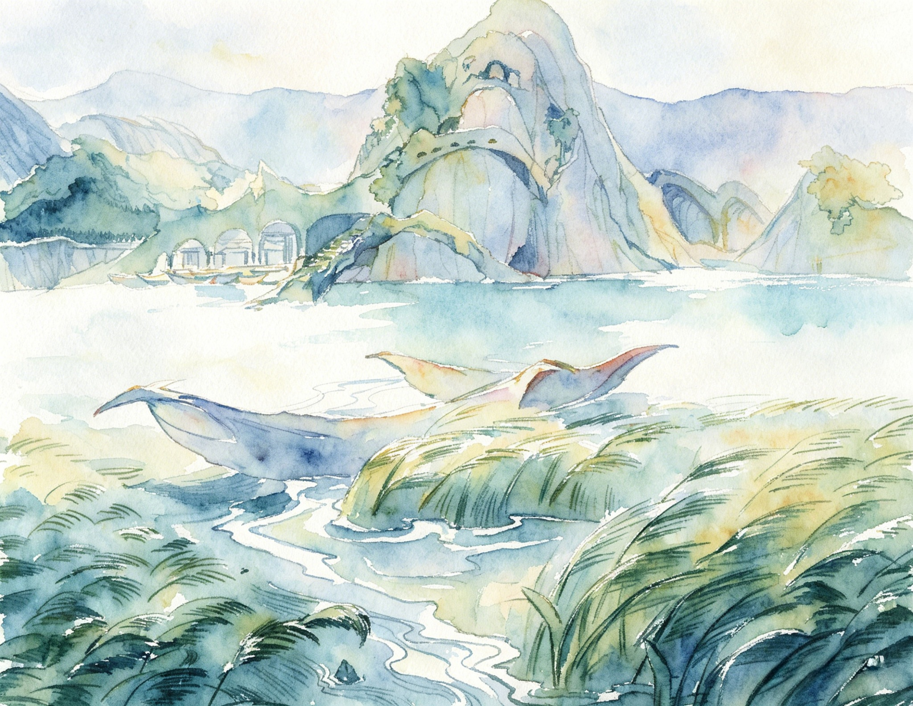
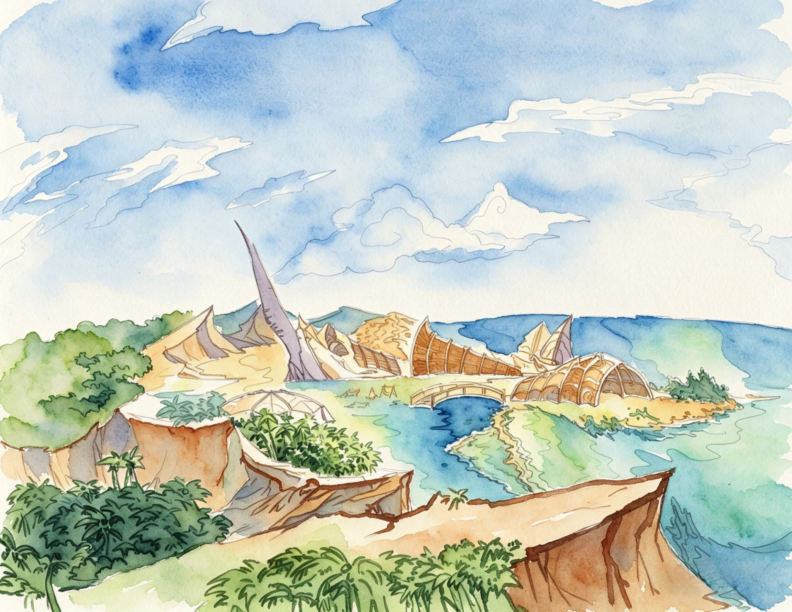
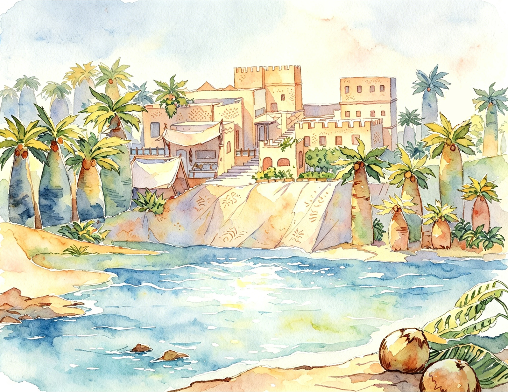
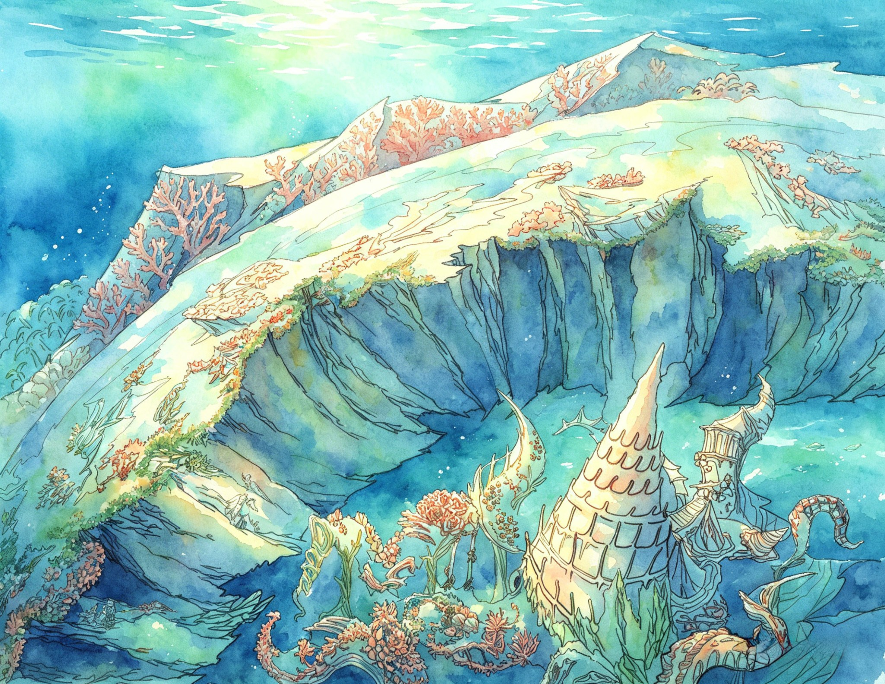
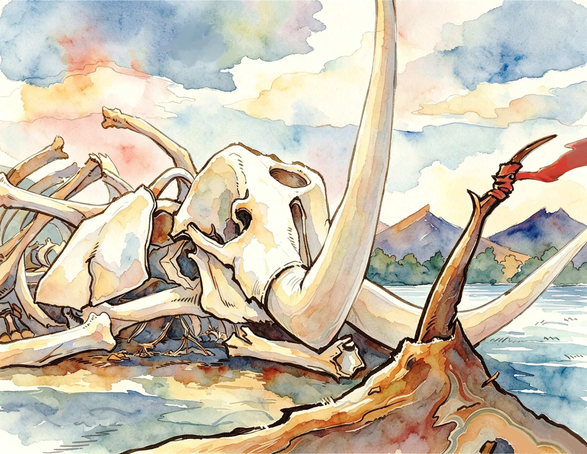
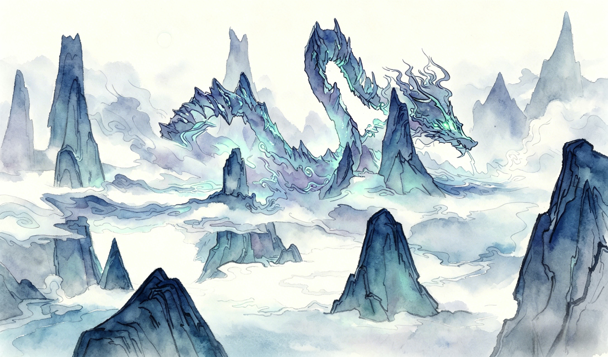
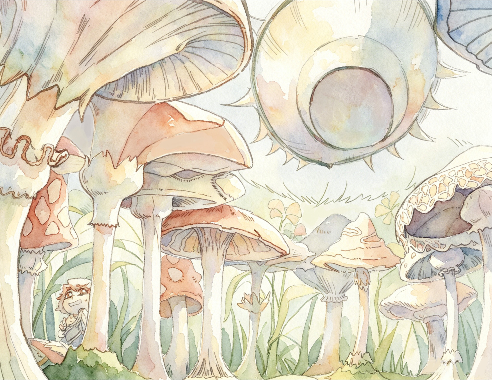
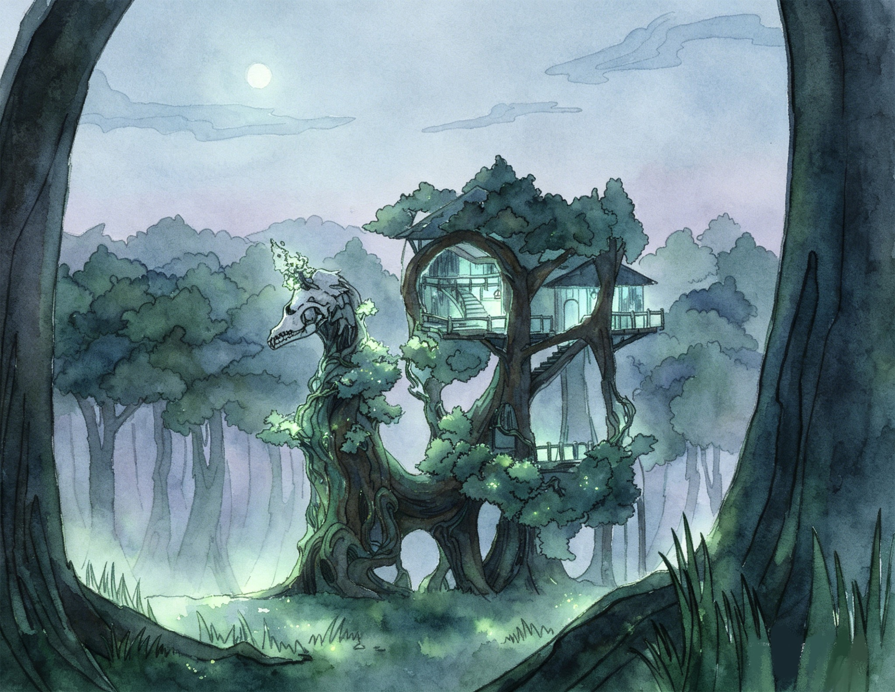
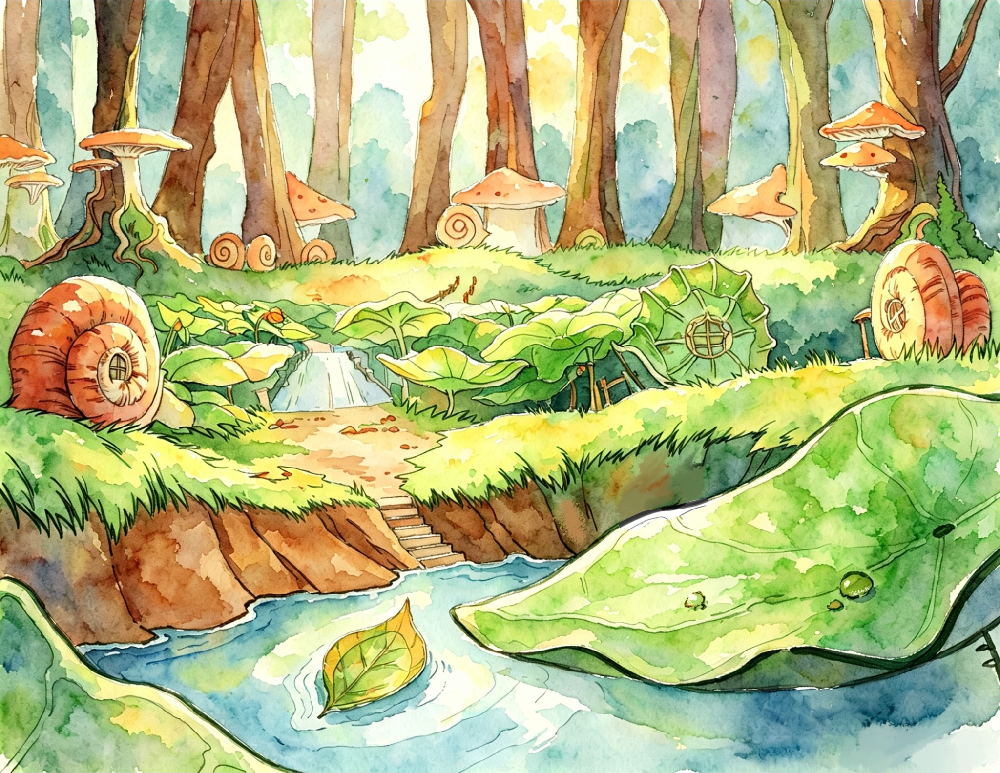
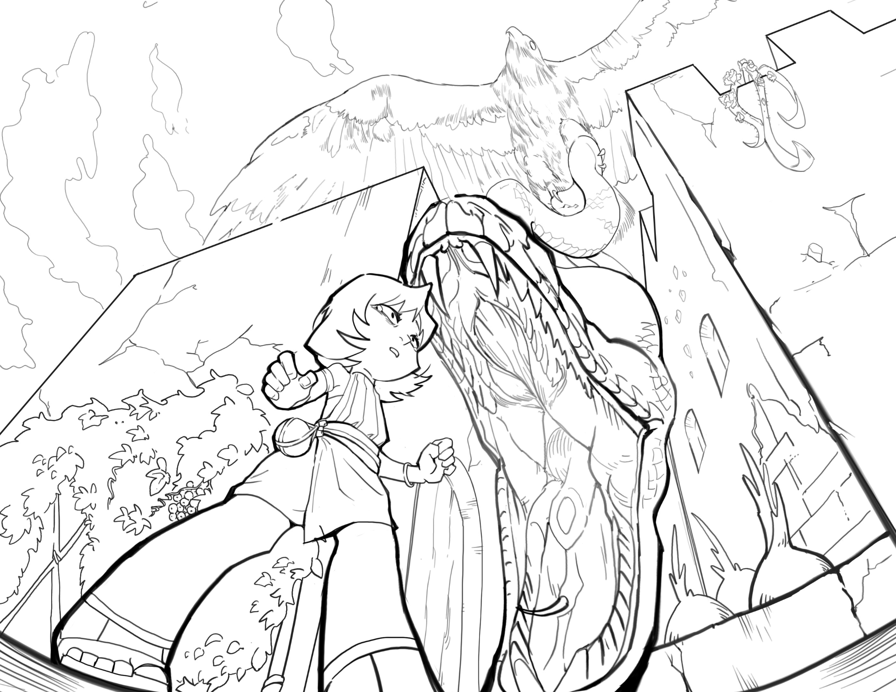
整体是古早原始纪元，无高度文明，环境恶劣且充满未知危险（巨鸟、毒蛇、有毒菌菇等）， 万物遵循最原始的食物链规则，野性且纯粹。
三大核心族群（陆人、虫翼人、鲛人）各有适配环境的生存能力： 陆人适应多场景、虫翼人有耐药性与昆虫翅膀、 鲛人擅长海洋协同作战。他们分散在不同栖息地—— 山地、野外、溪流、沙漠、森林、海洋。
世界核心是“原始生存博弈”——低端族群时刻面临被高阶生物（巨鸟、毒蛇、巨型怪兽） 捕食的风险，同时需应对资源稀缺的问题，生存的核心目标就是“活下去”。
所有种族赖以生存的智慧。面对巨兽遗骸创造的独特且充满挑战的环境， 各个种族必须学会与环境共生、与其他物种共生。这种共生不是被动的适应， 而是主动的改造与融合。
遵循“环境塑造种族”的逻辑，族群的体质、习性与生存方式均由其所处的自然环境 衍生而来，实现高度适配。